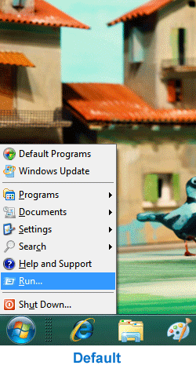

Classic Start Menu
Version 1.0.2 – general release
Classic Start Menu is a
clone of the original start menu, which you can find in all versions of
Windows from 95 to Vista. It has a variety of advanced features:
- Drag and drop to let you organize your applications
- Options to show Favorites, expand Control Panel, etc
- Shows recently used documents. The number of documents to display
is customizable
- Translated in 35 languages, including Right-to-left support for
Arabic and Hebrew
- Does not disable the original start menu in Windows. You can
access it by Shift+Click on the start button
- Right-click on an item in the menu to delete, rename, sort, or
perform other tasks
- Available for 32 and 64-bit operating systems
- Has support for skins, including additional 3rd party skins. Make your own!
- Fully customizable in both looks and functionality
- Support for Microsoft’s Active Accessibility
- And last but not least – it's FREE!
If you have used the start menu in older versions of Windows you’ll
feel right at home:

Press the Windows key or click on the orb in the corner of the
screen to open the start menu.
Hold down Shift while clicking on the orb to access the operating
system's own
start menu.
Click on an item to execute it.
Drag a program to change the order of the programs in a menu, or to
move it to another folder.
Right-click on an item to rename it, delete it, explore it, sort the
menu, or perform other tasks.
Right-click on the orb to edit the settings for the start menu, to view this help file, or to
stop the start menu.
Settings
Right-click on the orb to access the Settings dialog. The available settings are:
- Hotkey – use this to set an alternative hotkey (like Ctrl+Alt+C) for opening the menu instead of the Windows key
- Show Favorites, Show Documents, Show Log Off, Show Undock
- Expand Control Panel, Expand Network, Expand Printers
- Expand Links to Folders – links (shortcuts) to folders will be expanded as sub-menus
- Scroll Programs – when the program items don't fit on screen scroll the menu vertically rather than show multiple columns
- Skin – pick a skin to use for the start menu. Press the About This Skin button to see who the author of the skin is
- Skin Variation – some skins can have variations for small and large icons, for Basic and Aero, etc.
Before you click on the OK button you can open
the start menu to see how it will look with the current settings. This
is especially useful when you are trying different skins.
There is no setting to show small or large icons in the start menu. The
size of the icons depends on the current skin variation. Pick a skin variation that has the
icon size you want.
The start menu also checks most of the group policies set by the administrator. Run gpedit.msc and go to User Configuration -> Administrative Templates -> Start Menu and Taskbar. From there you can disable Run, Shutdown, Help, and other features. (Not available on Home versions of Windows).
Some settings used to be available in this dialog, but starting with
version 0.9.9 have been moved to a text file. Read the "More Settings"
section for details.
More Settings
Even more settings are available in the StartMenu.ini
text file in the installation folder – usually C:\Program
Files\Classic Shell. From there you can set things like:
MenuCaption – what text will show on the side of the main menu
SmallIconSize, LargeIconSize – the size of the icons in the menu
MenuDelay – the delay from hovering over a folder until the folder is expanded
ShowSearch – to show the Search menu or not
SearchFilesCommand – the command to run when Search -> For Files or Folders is selected
ShowHelp – to show/hide Help and Support
...and many others.
The text file contains detailed description of each setting as well as instructions how to change it.
Note: Changes to the
StartMenu.ini file will not take effect until the start menu is
restarted. Right-click on the orb and select "Exit". Then run ClassicStartMenu.exe. Also note that the StartMenu.ini file is global and the settings are shared by all users.
Important Note: The StartMenu.ini file (also the StartMenuItems.ini file described later)
will be overwritten when you upgrade to a new version of Classic Shell.
The new version may introduce new settings or even change the format of
the file. Make a backup copy of the file before you upgrade, and after
the upgrade reintroduce your changes to the new file one by one. Do not
simply copy your old file on top of the new because you may miss out on the
new settings.
More About Skins
You can pick from the 5 default skins:

Or you can download and install additional 3rd party skins (from Source
Forge or from another place). After you download a new skin you
must copy the .skin file to the Skins directory – usually C:\Program
Files\Classic Shell\Skins. After that it will be available in the settings.
Note: Some skins may be specifically designed for
Classic, Basic, or Aero mode. For example an Aero skin may require
glass support any will look weird if the Classic or Basic theme is
selected. Some Aero skins may also require specific glass color to be
selected.
You can create your own skin. You will need an image editor that
supports alpha channel (like Gimp or Photoshop) and a tool to edit
resource files (like Resource Hacker or Visual Studio). And of course
some talent for graphical design :). Read the Skinning Tutorial before you begin.
Custom Start Menu
If you wish you can completely change the structure of the start menu. Look at the file StartMenuItems.ini
in the installation folder – usually C:\Program
Files\Classic Shell.
From there you can add, remove or reorder the menu items. Change the
text or the icon. Create new sub-menus with even more commands. The
possibilities are limitless. Before you begin read the instructions in the ini file carefully.
Localization
The user interface (except the Settings dialog box) is localized in all
35 languages available for Vista and Windows 7. New languages can be
added by editing the file StartMenuL10N.ini
in the installation folder – usually C:\Program
Files\Classic Shell.
Command Line
The ClassicStartMenu.exe supports 3 command line parameters: -open, -toggle, and -togglenew.
The first two do what the name suggests. One opens the classic start menu, the other
toggles it. You can use the parameters to create a shortcut in your
QuickLaunch bar that opens the start menu. Or to set a hotkey in
programs such as WinKey.
The third one "-togglenew" toggles the new start menu. It is useful if
you want to map the new start menu to a hotkey and use the default Win
key for the classic menu.
Accessibility
The start menu supports screen readers like JAWS,
or Microsoft's Narrator. There is a known problem with JAWS when the
menu takes more than one column. If you are experiencing this problem
you can turn off the multi-column menus by checking the "Scroll
Programs" option in the Settings.
If the accessibility support causes problems it can be disabled from the StartMenu.ini file. Set EnableAccessibility to 0 (don't forget to remove the semicolon from the beginning of the line)